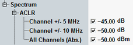

The energy that spills outside the designated radio channel increases the interference with adjacent channels and decreases the system capacity. The amount of unwanted off-carrier energy is assessed by the out-of-band emissions (excluding spurious emissions). The out-of-band emissions are specified in terms of the adjacent channel leakage power ratio (ACLR) and the spectrum emission mask.
The ACLR limits are defined in the configuration dialog.

- 44.2 dB at frequencies ±5 MHz from the carrier (channels ±1) and
- 49.2 dB at frequencies ±10 MHz from the carrier (channels ±2).
The limits must be met if the adjacent channel power is larger than –50 dBm (absolute limit).
3GPP TS 25.141, section 6.5.2.2 defines requirements for the ACLR. Verify it for the test model 1.
ACLR values are available as absolute power levels (dBm) and as power levels relative to the carrier power (dB). The absolute power levels are derived from the relative power levels via a conversion procedure. For current values, the conversion is based on the current carrier power. For average and maximum values, it is based on the average carrier power.
The less stringent of the two limits applies (absolute or relative power limit).